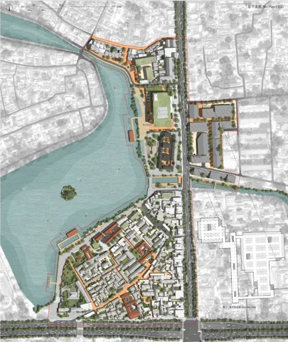

Ancient Trails,
Possible Futures
Can a trail reconnect the livelihoods and landscapes it once sustained?
A linked system of reception, production, rest and bathing facilities revisits the Tea Horse Trail in Gaoligong Mountain. Interventions vary with access, slope and ecological sensitivity: collective facilities concentrate near established settlements, while lighter structures support the mountain route.
Tsinghua Outstanding Graduation Thesis
A network before an object.
Reception, production and rest facilities form a sequence along the old route. Their distribution responds to settlement access and the changing terrain.
Different ground. Different degrees of intervention.
Small structures use point foundations and an assembly logic intended to reduce excavation. These drawings describe a design strategy; ecological performance and maintenance require further testing.
Project credits
Graduation research and design · Hao Chang
Tsinghua University / Politecnico di Torino collaboration · 2025–2026
Exhibited at Castello del Valentino, Turin · April 2026
Waterfront+
